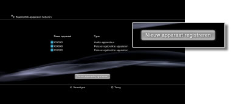

Instellingen > Randapparatuurinstellingen > Bluetooth®-apparaten beheren
Bluetooth®-apparaten beheren
Bluetooth®-compatibele apparaten registreren op of koppelen aan uw PS3™-systeem. U kunt ook de Bluetooth®-apparaten beheren die met uw systeem verbinding maken.
Een Bluetooth®-compatibel apparaat registreren
1. |
Maak het Bluetooth®-compatibele apparaat en de pincode gebruiksklaar. |
|---|---|
2. |
Selecteer |
3. |
Selecteer [Bluetooth®-apparaten beheren]. |
4. |
Selecteer [Nieuw apparaat registreren ].  |
5. |
Selecteer [Nu zoeken]. |
6. |
Selecteer het apparaat dat u wilt registreren of koppelen met uw PS3™-systeem. |
 (Instellingen) >
(Instellingen) >  (Randapparatuurinstellingen).
(Randapparatuurinstellingen).Opmerkingen
- Als u het maximale aantal draadloze controllers gebruikt, dient u apparaten die u niet gebruikt te verwijderen uit de lijst van geregistreerde apparaten om plaats te maken voor het nieuwe Bluetooth®-apparaat.
- Raadpleeg de gebruiksaanwijzing die met het apparaat meegeleverd werd voor meer informatie over het Bluetooth®-compatibele apparaat.
Bluetooth®-apparaten beheren
Informatie controleren over Bluetooth®-compatibele apparaten die aangesloten zijn op uw PS3™-systeem, of apparaten aansluiten en loskoppelen. Nadat u het apparaat hebt geselecteerd dat u wilt beheren, drukt u op de  -toets en selecteert u opties uit het optiemenu.
-toets en selecteert u opties uit het optiemenu.